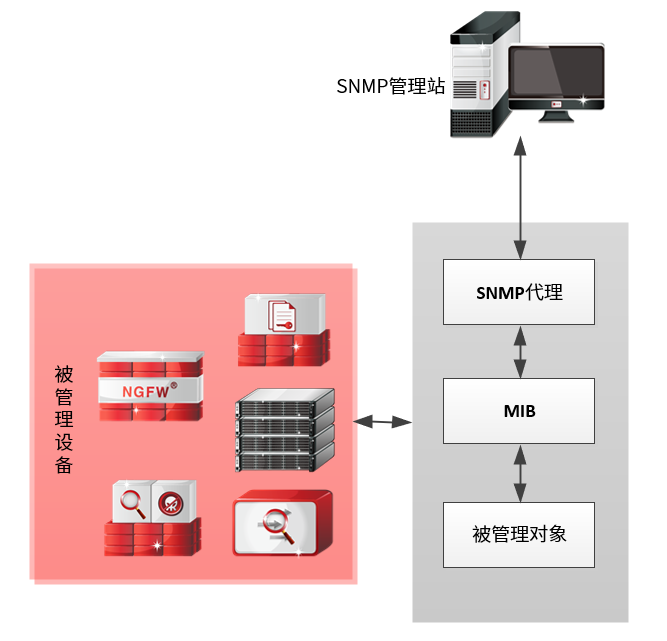
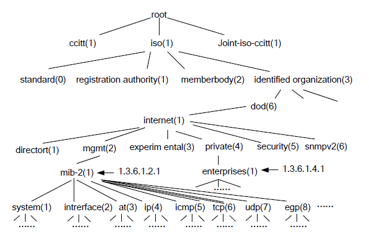
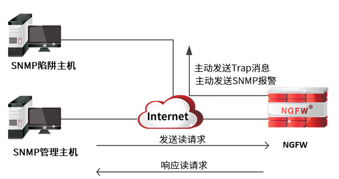

SNMP（Simple Network Management Protocol，简单网络管理协议），是TCP/IP网络基于UDP协议的网络管理标准协议，可以帮助网络管理员集中管理网络中的网络设备。SNMP网络管理模型包括以下部件：SNMP管理站、SNMP代理、被管理设备和MIB；系统内各模块的联系如下图所示。

1）SNMP管理站：运行SNMP网络管理软件的独立设备（一般为PC），是网络管理员集中管理网络设备的接口。其基本构成包括：一组具有分析数据、发现故障等功能的管理程序，一个用于监控网络的接口和一个从被管网络实体的MIB中抽取信息的数据库。管理站可以实现以下功能：
| l | 向网络设备发送“读”请求报文。 |
| l | 接收网络设备的响应报文、Trap消息以及报警消息。 |
2）SNMP代理：嵌入到网络设备中的功能模块，也指网络上设备支持的SNMP代理服务。通过在某网络设备上启动SNMP服务，网络管理员可通过SNMP管理站远程获取网络设备的配置信息和实时信息。SNMP代理可以实现以下功能：
| l | 接收来自SNMP管理站的请求报文。 |
| l | 响应来自SNMP管理站的“读”请求。 |
| l | 根据系统内部设定，主动地向SNMP管理端发送TRAP消息。 |
3）被管理设备：运行SNMP代理服务的网络设备，如计算机、路由器、交换机、防火墙、VPN、IPS等支持SNMP代理服务的网络设备。
4）MIB（Management Information Base，管理信息库）：提供标识网络设备所有可能被管理对象的集合，向管理站表明被管理设备的哪些部件可被管理。SNMP管理站通过读取MIB中具体的对象来获取设备配置或运行状况进行网络监控，并可以通过修改MIB中对象的变量值改变SNMP代理处资源的配置。
MIB采用树形结构命名方案来标识网络对象，网络设备中任何一个可被管理的对象都用MIB集合中的一个元素表示，唯一标识设备中的可被管理对象。网络对象由MIB中从根开始的路径唯一识别。如下MIB结构图，interface由{1.3.6.1.2.1.2}唯一表示。

MIB包括公有标准MIB库和厂商私有MIB库，天融信根据自身产品的特点自定义了TOPSEC MIB库，方便网络管理员获取天融信产品各功能模块的“读”权限。
NGFW内嵌SNMP代理服务功能模块，兼容SNMPv1、SNMPv2以及SNMPv3，支持主流的SNMP管理软件（如PRTG Network Monitor、SolarWinds、HP的Open View等等）对其进行管理，也可以响应SNMP管理站的查询请求，主动向SNMP陷阱主机发送TRAP消息及报警信息，其可实现功能如下图所示。

网络管理员要通过SNMP管理软件管理NGFW，使NGFW能主动发送其Trap消息及报警信息，需要进行如下设置：
| l | 配置管理主机/陷阱主机。 |
1）在管理主机/陷阱主机上安装SNMP管理软件（比如Mib browser软件）。
2）导入公有MIB库或TOPSEC MIB库并做简单配置。关于SNMP管理软件的安装及相关配置具体请参考相关管理软件的使用手册。
| l | 配置NGFW。 |
1）对SNMP管理区域的管理/陷阱主机开放SNMP服务。
2）添加管理主机对象。
3）添加陷阱主机对象。
4）可选。如果采用SNMPV3版本，需添加SNMP V3用户。
5）启动SNMP服务。